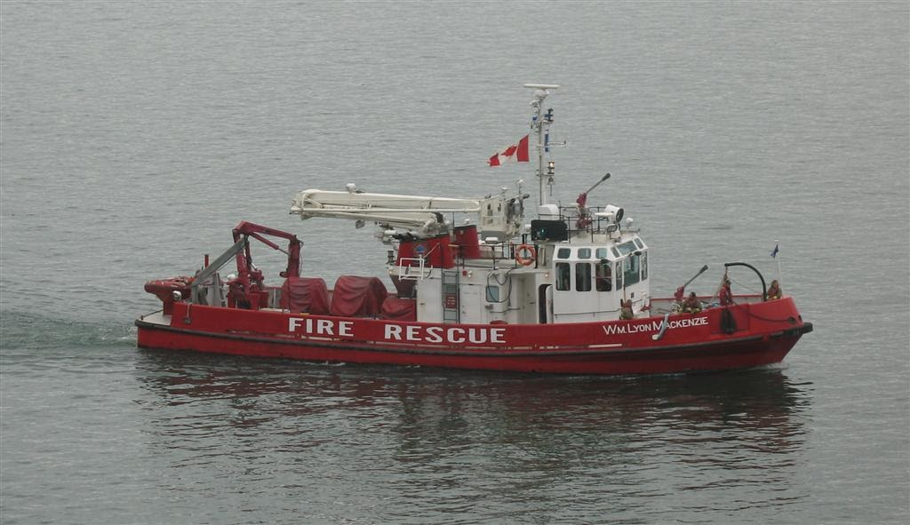

.png)
Types of Canadian Firefighting Vehicles
Explore the main categories of fire trucks used across Canada, from municipal engines to specialized rescue apparatus.

Engine / Pumper
The most common fire truck in Canada, used for delivering water and firefighters to structural fires. Equipped with hoses, pumps, and water tanks.

Ladder Trucks
Used for elevated rescues, roof ventilation, and firefighting operations at height. Includes aerial ladders and tower ladder apparatus.

ARFF Units
Aircraft Rescue and Fire Fighting vehicles used at airports for aviation emergencies, equipped with powerful foam systems.

Tanker / Water Tender
Transports large volumes of water to rural areas where hydrants are unavailable. Essential for rural firefighting operations.

Wildland / Brush Unit
Designed for forest and grassland firefighting. These off-road vehicles allow firefighters to reach remote wildfire areas.

Heavy Rescue / Technical Rescue
Specialized rescue vehicles carrying equipment for vehicle extrication, rope rescue, structural collapse, and technical rescues.

HazMat Unit
Responds to hazardous materials incidents involving chemicals, gases, or dangerous substances.
.jpg)
Command / Support Vehicle
Mobile command centers used by fire chiefs and incident commanders to coordinate large emergency scenes.

Fireboat
Marine firefighting vessels used in coastal cities and harbors to fight ship fires and waterfront emergencies.
Aerial Firefighting Aircraft
Canada also uses specialized aircraft to combat large wildfires across forests and remote regions.
.jpg)
Water Bombers
Amphibious aircraft capable of scooping thousands of litres of water from lakes and dropping it on wildfires.

Airtankers
Large aircraft that drop fire retardant ahead of advancing wildfires to slow their spread.